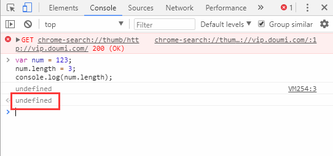

JavaScript学习笔记（10）- 对象
JavaScript学习笔记。本笔记是基于在腾讯课堂《Web前端开发之JavaScript精英课堂【渡一教育】》课程学习过程中记录的一些提纲和关键点。
强烈推荐想要进行js入门学习来听听，尤其是前面姬成讲的基础知识点。
引子
用已学的知识点，请描述下你心目中的对象。
…
不要想歪哦，我们说的是Object这个数据类型的对象。
对象定义
对象是JavaScript的一个基本数据类型，是一种复合值，它将很多值（原始值或者其他对象）聚合在一起，可通过名字访问这些值。
即属性的无序集合。
- 对象是带有属性和方法的特殊数据类型。
- JavaScript 中的所有事物都是对象：字符串、数值、数组、函数…
- JavaScript 允许自定义对象。
var mrDeng {
name : "MrDeng",
age : 40,
sex : male,
health: 100,
smoke : function() {
console.log('I am smoking! cool!!!');
mrDeng.health --;
}
drink : function () {
console.log('I am drinking!')
mrDeng.health ++;
}
}
对象方法
具有常规属性的四种方法：增、删、改、查。
增
增加一个对象的属性，就是直接对该属性进行赋值操作，相当于为该对象添加了一个新属性。
// 增
var mrDeng {};
mrDeng.wife = "xiaoliu";
console.log(mrDeng.wife) //xiaoliu
删
删除一个对象的属性，需要使用操作符delete后加上属性名进行删除。
// 删
delete mrDeng.age;
console.log(mrDeng.age) //undifined
改
修改一个对象的属性，直接通过赋值操作赋予其新的值即可。
// 改
mrDeng.wife = "xiaozhang";
console.log(mrDeng.wife) //xiaozhang
查
查询一个对象的属性值。
// 查
mrDeng.wife = "xiaozhang";
console.log(mrDeng.wife) //xiaozhang
从上面的示例可以看出，增改查都相当容易，只有执行删除的时候，需要使用操作符delete后加上属性名进行删除。
另外还发现一个问题：如果一个变量没有定义直接打印会报错，但如果直接访问一个没有定义对象的属性是没有报错的，返回undifined，这点很有意思。
对象创建方法
对象字面量(plainObject)
var ojb {}
构造函数创建法
- 系统自带的构造函数 Object(), Array(), Number(), Boolean(), Date()…
var ojb = new Object();
Javascript里的对象是所有语言里最灵活的，通过构造函数创建的对象可以灵活定义和修改。
在Object()前面加个new，变成new Object()的执行，就会真正返回一个对象。通过return返回，拿变量来接收。var obj = new Object(); 和var ojb = {}这样写区别不大。
- 自定义构造函数
function Person () {}
var person1 = new Person();
person1.name = 'lilei';
对象构造函数和常规函数在定义上基本没有区别，为了进行区分，一般规定对象构造函数的命名采用大驼峰式命名规则。
function Car () {
this.name = 'BMW';
this.width = '4900';
this.height = '2400';
this.health = 100;
this.run = function () {
this.health --;
}
}
var car1 = new Car(),
car2 = new Car();
car1.run();
console.log(car1.health); // 99
console.log(car2.health); // 100
自定义构造函数相当于一个工厂，新建的对象是工厂生产的产品。每一个对象在工厂生产时都赋予了相同属性，但彼此是独立的，没有任何交集。
在自定义构造函数里，如果对象的属性值是不确定的，每个对象都有不同的属性值，可以引入参数来解决。
function Student(name, age, sex) {
this.name = name;
this.age = age;
this.sex = sex;
this.grade = 2018;
}
var student1 = new Student('zhangsan', 23, 'male'),
student2 = new Student('lisi', 21, 'female');
console.log(student1);
console.log(student2);
延伸
构造函数的内部原理
构造函数的三段式：
- 在函数体最前面隐式的加上
this = {}； - 执行
this.xxx = xxx； - 隐式的返回
this。
function Student(name, age, sex) {
//隐式的加上this
//var this = {
// name : '',
// age : '',
// sex : '',
// grade : 2018
//};
this.name = name;
this.age = age;
this.sex = sex;
this.grade = 2018;
//return this; 隐式的返回this
}
构造函数的前提是必须在定义的时候加new，有了new，就能产生构造函数的效果。
下面再看一个例子：
function Person(name, height) {
//var this = {}; 隐式的加上this
this.name = name;
this.height = height;
this.say = function () {
console.log(this.say); //此处的this和外面的this不同
}
//return this; 隐式的返回this
}
console.log(new Person('xiaozhang', 180).name) // xiaozhang
如果想显示的表示出来呢？
function Person(name, height) {
var that = {};
that.name = name;
that.height = height;
return that;
}
var person1 = Person('xiaowang', 180);
var person2 = Person('xiaozhang', 160);
console.log(person1); //Person{...}
console.log(person2); //Person{...}
通过这种显示的方式引用，也是可以正常返回对象。
但如果在函数中，显示的通过return返回一个空对象或者非对象的原始值，会是什么结果呢？
function Person(name, height) {
this.name = name;
this.height = height;
return {};
//return 123
}
var person1 = new Person('xiaowang', 180);
var person2 = new Person('xiaozhang', 160);
console.log(person1);
console.log(person2);
通过浏览器我们可以看到结果：
如果return一个对象值(数组、函数或者对象)，受其影响，返回的也是
retrun的对象值；
如果return一个原始值是不允许的，返回结果这不受其影响。
综上，通过new 创建的构造函数就不能再返回原始值了。
包装类
先记住两点：
- 原始值是没有属性和方法的，只有原始值数字才是原始值。
- 只有对象可以有，通过构造函数创建的对象也可以有属性和方法。包括：
new Number()、new String()和new Boolean()。
var num = new Number(123); //数字型对象
var str = new String('abc'); //字符串型对象
var bol = new Boolean('true') //布尔型对象
数值型对象也可以参与运算，但运算后就变成原始值了。
undefined和null不可以有属性和方法。
下面我们看一种情况：
var num = 123;
num.length = 3;
console.log(num.length);
根据上面我们了解到的原始值不可能有属性和方法，那num.length输出应该会报错。
看看输出结果：

没有报错，而是undefined。
如何理解呢？这里就要引入包装类的概念。
我们说JavaScript是非常灵活的，在执行语句的时候，系统有时候会加入一些自己的思考和判断。
在原始调用属性或者方法时，本身自己不能有，但会隐式的发生一个过程：在执行num.length = 3;语句时，会隐式的新建一个对象把原始值放进去：new Number(123).length = 3，完成后选择销毁delete。输出语句console.log(num.length)时，系统会重复新建对象的过程console.log(new Number(123).length)，这两个新建的对象是彼此独立的，因为后一个对象没有赋值，所以返回undefined。
var num = 123;
num.length = 3;
// new Number(123).length = 3;
// delete;
console.log(num.length);
// console.log(new Number(123).length);
// undefined
这个隐式的中间环节就是包装类。
看一个示例：
var str = 'abcd';
str.length = 2;
console.log(str);
咋一看，我们觉得输出的结果是ab，我们分析下过程：
var str = 'abcd';
str.length = 2;
// new String('abcd').length = 2;
// delete;
console.log(str);
因为新建出来的字符串对象和原str不是同一个对象，所以输出的结果不会受影响，仍然是abcd。
再看一个例子：
var str = 'abcd';
str += 1;
var test = typeof str;
if(test.length == 6) {
test.sign = "typeof的返回结果可能是String";
}
console.log(test.sign);
我们分析下：
var str = 'abcd';
str += 1; //输出'abcd1'
var test = typeof str; //输出'string'
if(test.length == 6) {
test.sign = "typeof的返回结果可能是String"; //包装类 new Sting('abcd').sign = 'xxx'; delete;
}
console.log(test.sign); //包装类 new String('abcd').sign
这个题充满了各种坑，最终结果其实是：undefined。
课后作业
求任意一个字符串的字节长度。
通过string.charCodeAt(str)方法可以判断当前字符位的Unicode码：如果<=255，改字符的长度为1；如果>255，字符长度为2。
// code 1
function bitesLength (str) {
var count = 0;
for(var i = 0; i < str.length; i ++) {
console.log(str.charCodeAt(i));
if (str.charCodeAt(i) <= 255) {
count ++;
} else {
count += 2;
}
}
console.log('The String "' + str + '" length is ' + count);
}
// code 2
function bitesLength (str) {
var count = str.length;
for(var i = 0; i < str.length; i ++) {
console.log(str.charCodeAt(i));
if (str.charCodeAt(i) > 255) {
count ++;
}
}
console.log('The String "' + str + '" length is ' + count);
}
bitesLength('abcd 打飞机');